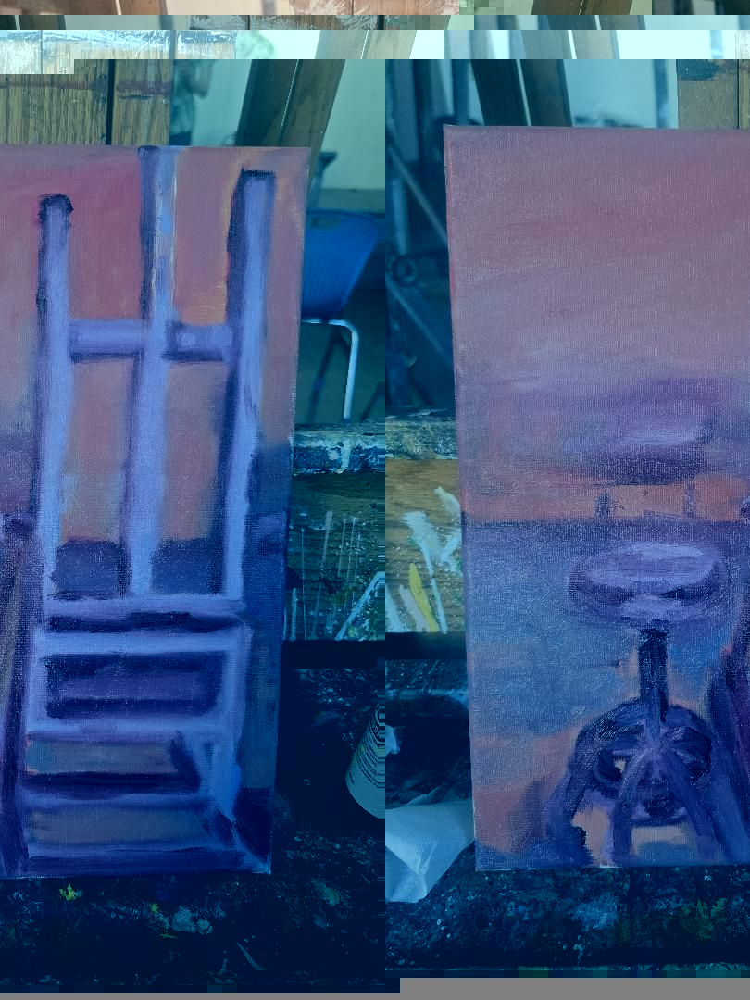

Wither Away
The title of my work is "Whither Away". The thesis of my work is how certain traditional media tend to experience natural physical changes like varnish yellowing, pigment fading, and dirt accumulation after years of exposure to natural elements. However this withering away is shown through glitches to signify the age of the image rather than a natural process. My intentions behind my work was to show a glitch to represent metaphorical withering away that happens to all types of art. Certain mediums begin to loose interest, styles become unpopular and even the format of a glitch becomes outdated in an overstimulated culture. By using a picture of a painting and a glitch creatures a contrast I foreshadow it will eventually be overtaken and become obsolete.
Sonder
The title of my work is called Sonder, named after the phenomena when people come to the sudden realization that every stranger is living lives as complex vidid and real as their own. However even when knowing this there is sadness and comfort that you are not unique in your suffering. With this digital mashup I sough out to visualize a unique form of loneliness when you realize everybody's lives are just as complex as your own yet you still feeling detached from other people.